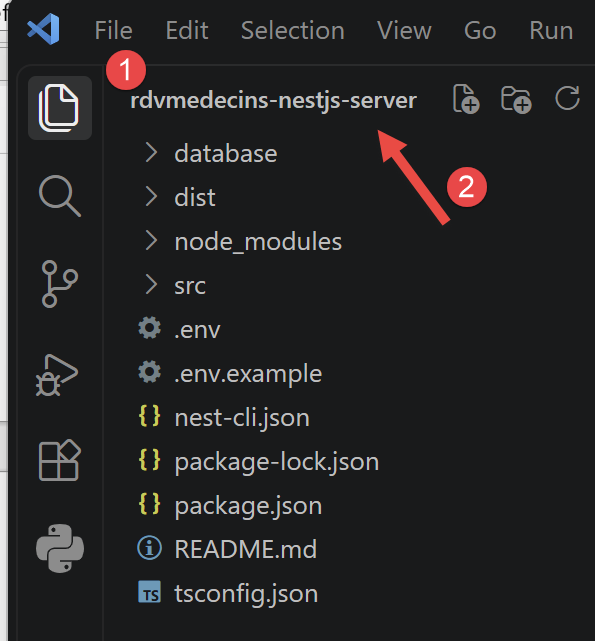
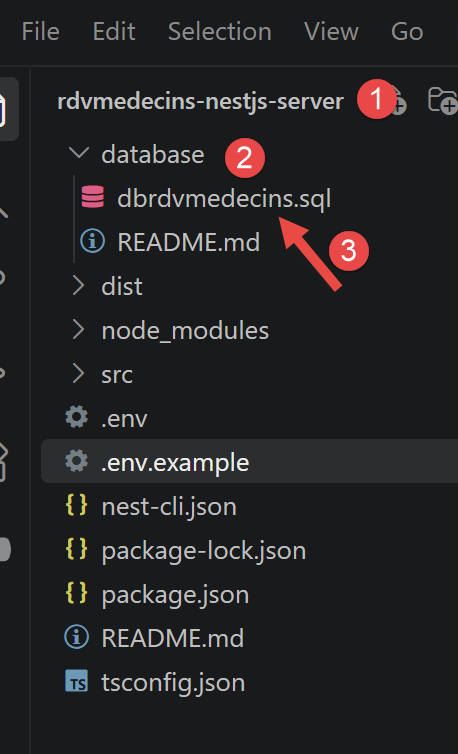
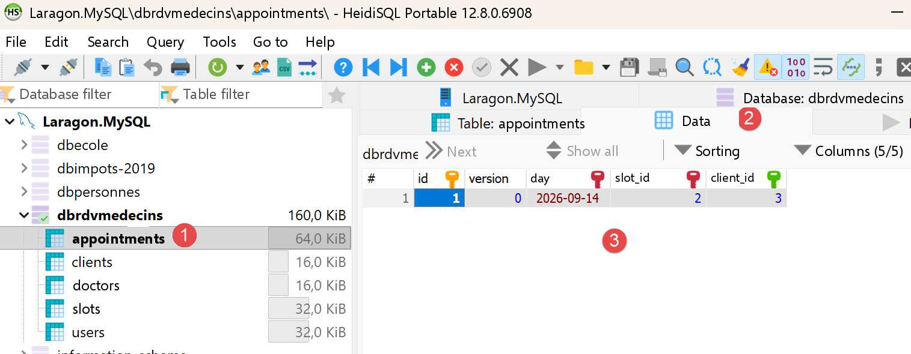
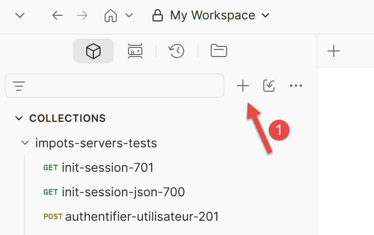
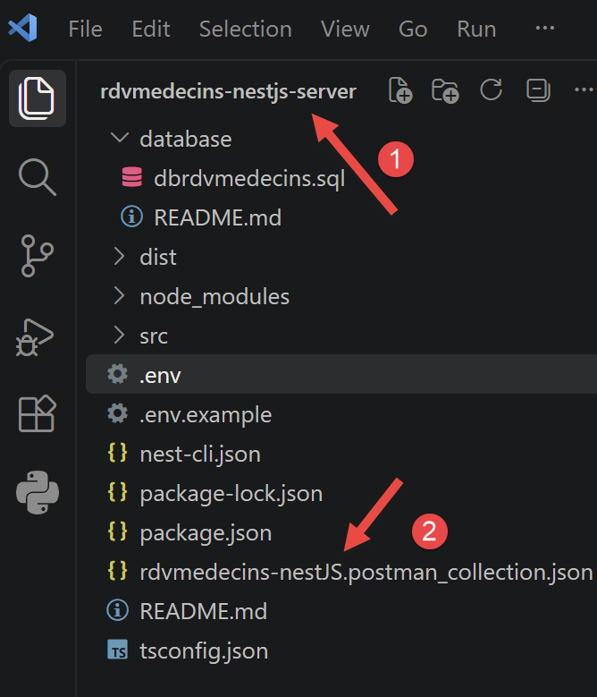

2. Capítulo 1 - Configuración del entorno de trabajo
2.1. Instalación de las herramientas
- Node.js: Descargue e instale la versión 22 (o posterior) desde nodejs.org. Verifique la instalación en una terminal:
- Visual Studio Code (VSCode): disponible para descarga gratuita en code.visualstudio.com. Instale la extensión «TypeScript and JavaScript Language Features» (normalmente ya viene incluida).
- CLI de [NestJS], que se instala una sola vez (del lado del cliente, [Vite] no requiere ninguna instalación global; véase la introducción). En una terminal de VSCode:
- [MySQL] 8: Instálelo, por ejemplo, mediante XAMPP, Laragon (en Windows) o directamente mediante [MySQL] Community Server. Una herramienta gráfica de administración (phpMyAdmin, [MySQL] Workbench, DBeaver, HeidiSQL…) simplifica el proceso. En lo sucesivo se utiliza la herramienta Laragon.
- Postman: disponible para descarga gratuita en postman.com.
Si descargó el código, este se encuentra en dos carpetas:

- en [1], el cliente [Vue.js];
- en [2], el servidor [NestJS];
Abra la carpeta [2] con Visual Studio [File / Open Folder]:

2.2. Creación de la base de datos
Para crear la base de datos [MySQL] que utiliza el servidor [NestJS], usaremos la herramienta Laragon. En septiembre de 2026, Laragon está disponible en la URL [Download Laragon – Fast & Modern Dev Environment ]. Laragon incluye herramientas que permiten instalar un servidor PHP y los servidores del SGBD [MySQL]:

- en [1], un servidor web Apache;
- en [2], el SGBD [MySQL];
- en [3], una herramienta de mensajería que no utilizaremos;
- [4] inicia todos los servicios (Apache, [MySQL], MailPit);
- [5] muestra la página web de la URL [http://localhost]. De forma predeterminada, esta URL corresponde a la carpeta <laragon-install>\www, donde <laragon-install> es la carpeta de instalación de Laragon;
- en [6], inicia la herramienta HeidiSQL, que permite administrar bases de datos MySQL. Usaremos esta herramienta para crear la base de datos que utiliza el servidor [NestJS];
- En [7], abre una terminal; todos los binarios necesarios para Laragon están en el PATH;
- En [8], abre una ventana del Explorador de Windows en la carpeta asociada a la URL [http://localhost];
La carpeta de instalación de Laragon contiene los siguientes elementos:
 |
- En [1], la carpeta [bin] contiene numerosas aplicaciones:
 |
- En [1], el servidor web Apache;
- en [2], una terminal de línea de comandos;
- en [3], un cliente [git] que permite administrar las distintas versiones de un proyecto;
- en [4], un administrador de bases de datos;
- en [5], un administrador de correo;
- en [6], el SGBD [MySQL];
- [7], otro servidor web;
- en [8] y [node.js] para ejecutar scripts de JavaScript;
- en [9], un editor de texto;
- en [10], el intérprete de PHP;
- [11], el intérprete de [Python];
- [12], un servidor de caché;
Laragon incluye un entorno de desarrollo completo. En este curso, solo usaremos el SGBD [MySQL], [6], y la herramienta [heidisql] para administrarlo gráficamente;
Para crear la base de datos [MySQL] que requiere el servidor [NestJS], proceda de la siguiente manera:
 |
- En [1], todos los servicios deben estar iniciados;
- En [2], la opción [Database] permite administrar la base de datos;
La opción [Database] inicia una utilidad llamada HeidiSQL:
 |
- En [1], puede seleccionar diversas opciones de SGBD. El valor predeterminado es el SGBD MySQL. Es aceptable;
- en [2], se conecta a HeidiSQL;
 |  |
- En [1-2], ejecute el archivo SQL y luego seleccione el archivo [dbrdvmedecins.sql], que encontrará en la carpeta [rdvmedecins-nestjs-server/database]:

La ejecución del archivo [3] creará la base de datos [dbrdvmedecins] que utiliza el servidor [NestJS]. Para verla, presione F5 en HeidiSQL para actualizar la pantalla:

La base de datos [dbrdvmedecins] ha sido creada. Puede ver su contenido:

- En [1-3], la tabla [clients];
- [id] es la clave primaria de la tabla;
- [version] es el número de versión de la fila. Este número se incrementa cada vez que se modifica la fila;
- [title, last_name, first_name] identifica a la persona;

- en [1-3], la tabla [doctors];
- [id] es la clave primaria de la tabla;
- [version] es el número de versión de la fila;
- [title, last_name, first_name] identifica a la persona;

- En [1-3], la tabla de los horarios de cita de los médicos:
- [id]: clave primaria;
- [version]: número de versión de la fila;
- [doctor_id]: clave externa que referencia la clave primaria del médico;
- [start_hour, start_minute]: hora y minutos de inicio de la cita. Así, [8,20] significa 8:20 a. m.
- [end_hour, end_minute]: hora y minutos de finalización de la consulta.

- En [1-3], la tabla [appointments] de las citas programadas;
- [id]: clave primaria;
- [version]: número de versión;
- [day]: fecha de la cita;
- [slot_id]: clave externa que referencia la clave primaria del horario de la cita. Como un horario está vinculado a un médico, sabemos qué médico atiende esta cita;
- [client_id]: clave externa que referencia el número (clave primaria) del paciente que asiste a la cita;

- en [1-3], la tabla [users], que enumera los usuarios autorizados a utilizar la aplicación [NestJS];
- [id, version]: clave primaria, número de versión;
- [login, password]: credenciales del usuario;
- [name]: nombre del usuario;
- [role]: el rol del usuario. [ADMIN] tiene acceso total. [USER] tiene acceso de solo lectura. Este usuario puede ver la agenda de un médico, pero no puede programar ni cancelar una cita;
2.3. Primer inicio del servidor [NestJS]
En la carpeta [rdvmedecins-nestjs-server], escriba los siguientes comandos en una terminal:
El archivo [.env] define variables de entorno:
Personalice el archivo [.env] recién creado para que coincida con su instalación de [MySQL] (nombre de usuario, contraseña, puerto). Dado que se agregó la autenticación (véase el capítulo 3), este archivo también contiene una clave llamada JWT_SECRET: el valor de ejemplo sirve para seguir este documento, pero debe reemplazarse por una cadena aleatoria única propia antes de cualquier uso real.
Inicie todos los servicios de Laragon [Start All], si aún no lo ha hecho.
Luego inicie el servidor:
La consola muestra, en orden: el inicio del módulo [NestJS], la lista de rutas expuestas por el controlador y, por último, la confirmación del inicio:
Esta salida de la consola confirma que el servidor efectivamente escucha en el puerto 8080, exactamente el mismo puerto que el del servidor Spring Boot del documento original, que se eligió deliberadamente por este motivo.
2.4. Prueba del servidor con un navegador
Dado que se agregó la autenticación (capítulo 3), todas las rutas de [RdvMedecinsController] requieren un token JWT válido: por lo tanto, ya no es posible probarlas directamente solo con un navegador. Por ejemplo:
ahora devuelve un error 401 Unauthorized sin un token:

Este es el comportamiento esperado: esta respuesta confirma que el servidor protege correctamente sus rutas. Se necesita Postman (sección siguiente) para obtener un token y luego utilizarlo.
2.5. Prueba del servidor [NestJS] con Postman
La herramienta Postman está disponible en la URL [https://www.postman.com/downloads/]. Es posible que deba crear una cuenta.
Inicie todos los servicios de Laragon y luego abra la aplicación de escritorio de Postman:
 |  |
- En [1-2], cree una solicitud HTTP para consultar el servidor de gestión de citas de los médicos;
2.5.1. Inicio de sesión y obtención de un token
- Cree una nueva solicitud en Postman con el método POST y la URL http://localhost:8080/login;
- En la pestaña [Body], seleccione "raw", luego el formato JSON e ingrese: {"login": "admin", "password": "admin"} (o "user/user" para probar el rol USER);
- Envíe la solicitud.

- en [1-2], la solicitud POST al servidor [NestJS] que se ejecuta en el puerto 8080;
- en [3-5], el cuerpo de la solicitud. Este transmite al servidor la cadena JSON que contiene las credenciales del usuario que intenta iniciar sesión, en este caso admin/admin;
- en [6], la respuesta del servidor;
- en [7], el token de autenticación que las solicitudes posteriores deben enviar al servidor para indicar «ya me autentiqué»;
Copie el valor de accessToken: este es el token que ahora debe incluir en cada solicitud posterior. En el ejemplo anterior, el token que se debe copiar es «eyJ...zoM» (sin las comillas).
2.5.2. Llamada a una ruta protegida con el token
Para GET /getAllDoctors (o cualquier otra ruta de RdvMedecinsController), en Postman, en la pestaña Authorization, seleccione el tipo Bearer Token y pegue el token copiado anteriormente (Postman agregará entonces automáticamente el encabezado Authorization: Bearer <token>).

- en [1-2], la solicitud enviada al servidor. Solicita la lista de médicos de la base de datos;
- En [3-5], la solicitud debe enviar el token de autenticación. En [4], seleccione [Bearer Token], y en [5], pegue el token de autenticación que copió anteriormente;
- en [7], la respuesta del servidor;
2.5.3. Prueba de las rutas POST (/addAppointment, /deleteAppointment)
Siga el mismo procedimiento anterior (método POST, cuerpo JSON, Bearer Token), exactamente como el documento original utilizaba la extensión de Chrome «Advanced Rest [Client]» para las mismas rutas.
Nota: Puede encontrar las siguientes solicitudes de Postman en la colección [rdvmedecins-nestJS.postman_collection.json]:

En Postman, presione Ctrl-0 para cargar la colección:

- Haga clic en [1] para cargar la colección y seleccione el archivo de la colección. Una vez cargada la colección, se muestran sus solicitudes:

Para probar /addAppointment con el token de una cuenta ADMIN:
- Solicitud de Postman, método POST, URLhttp://localhost:8080/addAppointment;
- Authorization, pestaña: Bearer Token, token del administrador;
- [Body], pestaña: raw, JSON: {"day": "2026-09-13", "clientId": 1, "slotId": 5};
- Envíe la solicitud.

Puede usar HeidiSQL para verificar que se haya agregado una cita a la base de datos:

Para probar /deleteAppointment, siga el mismo procedimiento con el cuerpo {"appointmentId": 2} (el identificador de la cita que se va a cancelar (8) arriba).

- en [4], donde el número indicado arriba es la cita que se va a eliminar;

- en [5-7], el token de autenticación;
- en [9], la respuesta del servidor. [status=0] indica que la operación se realizó con éxito. Puede verificarlo con HeidiSQL:

- en [3], la cita n.º 2 ya no existe;
Pruebe esto: repita la misma solicitud /addAppointment usando el token de la cuenta USER (user/user) en lugar del token de admin: la respuesta pasa a ser 403 Forbidden, con el mensaje «el rol [USER] no permite esta acción (rol requerido: ADMIN)», una demostración concreta del control de acceso basado en roles implementado en el capítulo 3.
2.6. Primer inicio del cliente [Vue.js]
En la carpeta rdvmedecins-vuejs-client (el servidor [NestJS] debe haberse iniciado previamente):
Luego abra http://localhost:4200 en un navegador: primero aparece la pantalla de inicio de sesión (véase el capítulo 5).

- en [1], el servidor de la URL que entrega la aplicación [Vue.js];
- [2], la URL del servidor [NestJS] que administra la base de datos [dbrdvmedecins];
Es importante comprender que aquí hay dos servidores web, uno de los cuales actúa como cliente del otro.
Dos botones con las etiquetas «FR» y «EN» en la esquina superior derecha permiten cambiar la interfaz a francés, incluso antes de iniciar sesión. Inicie sesión con una de las dos cuentas de demostración (admin/admin, acceso total, o user/user, solo lectura) para acceder al resto de la aplicación. El capítulo 5 ofrece una guía detallada del uso de este cliente, con capturas de pantalla de cada paso.